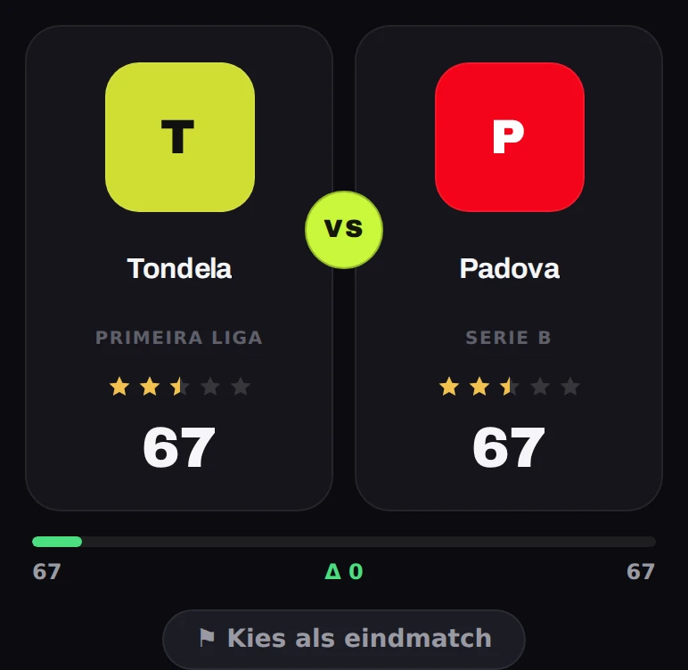

EVENMATCH
Teamkiezer voor EA FC Kick-Off met zijn tweeën. Eén knop, en je krijgt twee teams met dezelfde sterren en een squad-rating die dicht genoeg bij elkaar ligt om er geen ruzie over te maken.
- Pool705 teams, clubs en landenteams
- Dataelke maandagochtend automatisch ververst
- Offlinewerkt door zonder verbinding